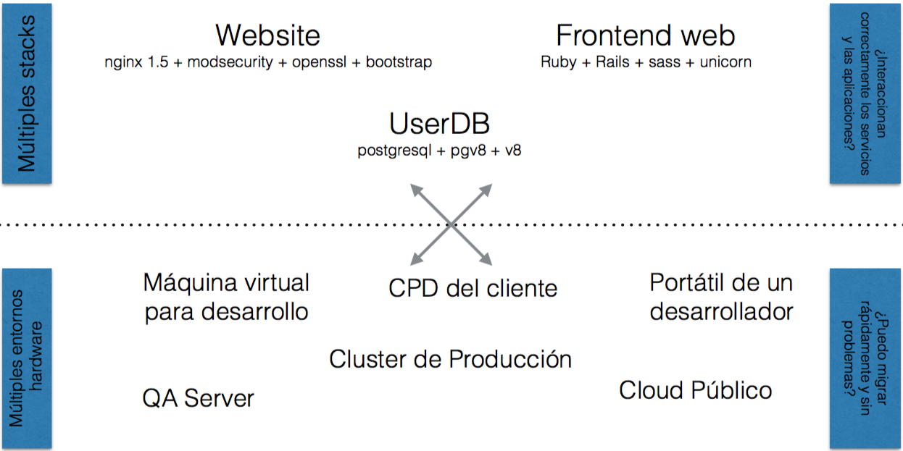
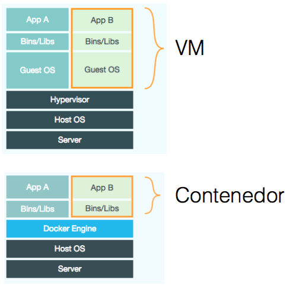
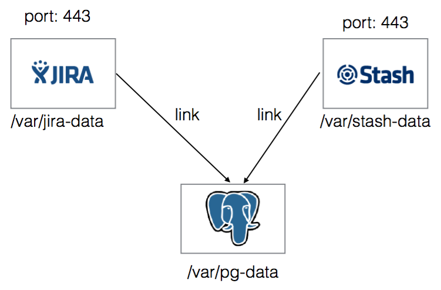
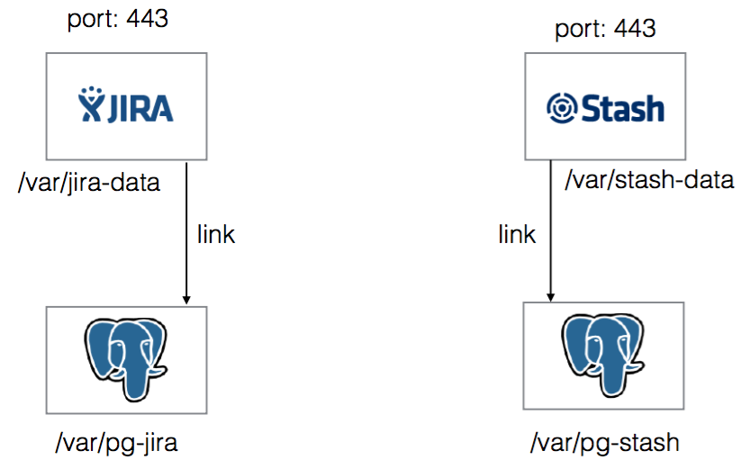

Introducción a Docker
Betabeers Murcia XI
Ignacio López Flores

Todo comenzó en Marzo de 2013
Y desde entonces...
- > 200.000 pulls
- >7,500 estrellas en Github
- >200 contribuidores importantes
- >200 proyectos realizados sobre docker
- >13.000 aplicaciones Dockerizadas
- Memcached, Redis, Node.js, Hadoop...
- Integración en Jenkins, Travis, Chef, Puppet, Vagrant y OpenStack
- Meetups por todas partes...
- con organizaciones como Ebay, Cloudflare, Betabeers,...
El Reto
La Matriz del Infierno

Transportes antes de los 60
Tenían su propia matriz del infierno

¿Cómo lo solucionaron?
Contenedores de transporte

Se puede ver Docker como
Un sistema de Contenedores para Código

Docker elimina La matriz del Infierno

¿Por qué le gusta a los desarrolladores?
- Se construye una vez... y se ejecuta en cualquier parte*
- Un entorno de ejecución limpio, seguro, higiénico y portable para tus aplicaciones.
- Una vez desplegado, no hay que volver a preocuparse por dependencias, paquetes y otras configuraciones que suelen traer dolores de cabeza.
- Cada aplicación se ejecuta en su propio contenedor aislado, eso nos permite tener distintas versiones de librerías y otras dependencias para cada aplicación sin preocupaciones.
* Donde “cualquier parte” quiere decir un servidor x86 ejecutando un kernel Linux (generalmente 3.2+ o 2.6.32+ para RHEL o derivados)
¿Por qué le gusta a los desarrolladores?
- Test automáticos, integración continua, empaquetado... en definitiva, cualquier cosa para la que se pueda escribir un script.
- Elimina problemas sobre compatibilidad en diferentes plataformas, tanto en la tuya como en la de tus clientes.
- No hay penalización a la hora de desplegar servicios. Una VM sin la sobrecarga de una VM. Se pueden re-lanzar y resetear imágenes al instante.
¿Por qué le gusta a los administradores?
- Lo configuramos una vez... y lo ejecutamos cada vez que queramos.
- Consigue que el ciclo de vida sea más eficiente, consistente y repetible.
- Incrementa la calidad del código de los desarrolladores. Elimina inconsistencias entre entornos de desarrollo, test, producción, etc.
¿Por qué le gusta a los administradores?
- Mejora significativamente la velocidad en despliegues automáticos y en sistemas de integración continua.
- Como los contenedores son muy ligeros, se eliminan los problemas de rendimiento, costes, despliegues y problemas de portabilidad a los que normalmente están asociadas las VM.
¿Por qué funciona? Separación de conceptos
Lo de dentro
Pepe el desarrolladorSe preocupa por lo que está dentro del contenedor:
- Su código
- Sus librerías
- Sus aplicaciones
- Sus datos Para el, todos los servidores linux son iguales
Lo de fuera
Paco el administradorSe preocupa por lo que está fuera del contenedor:
- Ficheros de log
- Acceso remoto
- Monitorización
- Configuración de red
Más detalles técnicos
Se ejecuta en cualquier parte
- Indep. de la versión del kernel
- Indep. de la distro del host
- Virtual o físico, en la nube o en hierro
Más detalles técnicos
Se puede ejecutar cualquier cosa
- Si se puede ejecutar en el host, se puede ejecutar en el contenedor.
- Si se puede ejecutar sobre un kernel Linux, se puede ejecutar
Más detalles técnicos
A alto nivel: una VM ligera
- Propio espacio de procesos
- Propia interfaz de red
- Puede ejecutar órdenes como root
- Puede tener su propio /sbin/init
- Contenedor == Máquina
Más detalles técnicos
A bajo nivel: CHROOT con esteroides
- Puede no tener su propio /sbin/init
- Contenedor = procesos aislados
- Comparte el kernel con el host
- Contenedor == Aplicación
VMs vs Contenedores

Los contenedores están aislados, pero comparten el kernel
... lo que aporta los beneficios de las VM pero con mucha menos sobrecarga, más portabilidad y eficiencia
Ejemplos prácticos

Ejemplos prácticos
Ejemplos prácticos
Ejemplos prácticos